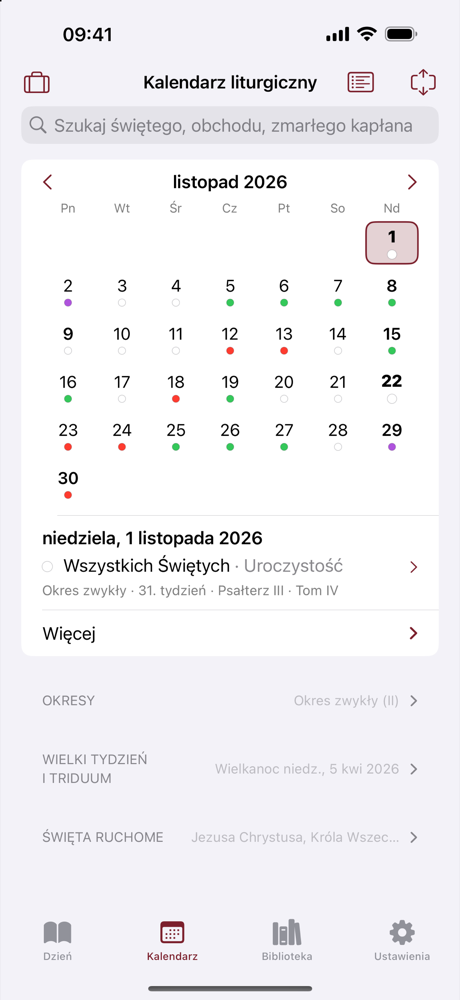
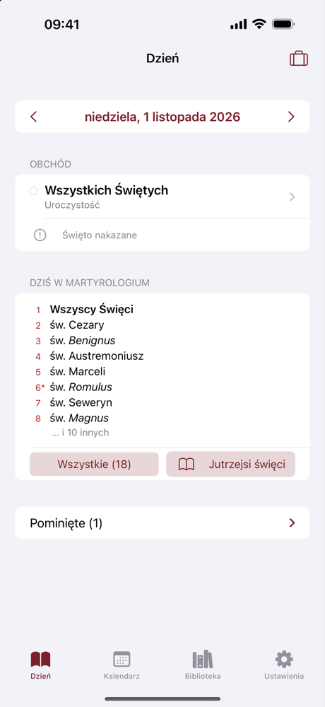
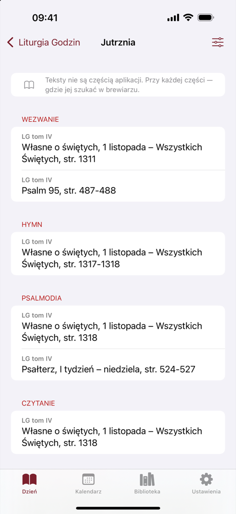
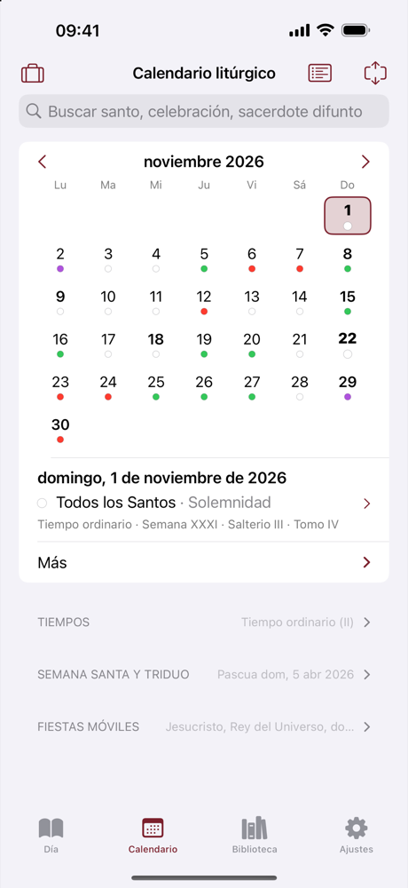
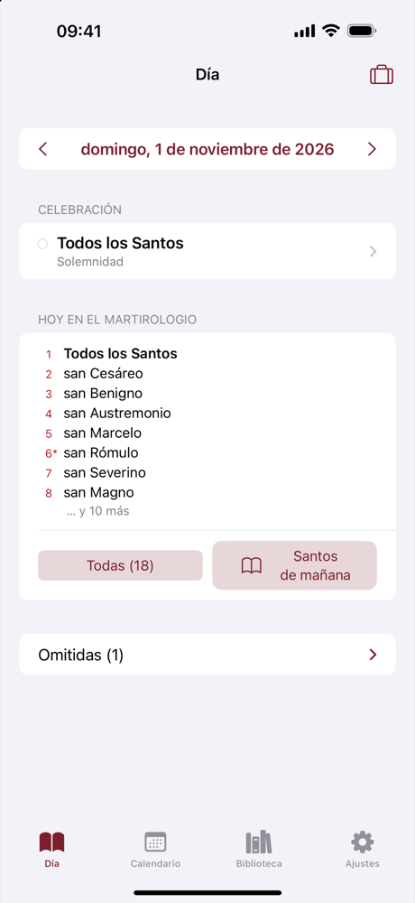
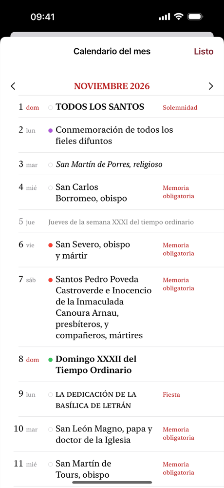

Co dziś w liturgii?
Sprawdź w Mannie.
Pomocnik Liturgii godzin w Twoim telefonie
 Android — w przygotowaniu
Android — w przygotowaniu
Bezpłatnie w App Store · Bez reklam · Bez internetu · Nic nie wychodzi z telefonu



Co w aplikacji
Manna podpowiada, co przypada danego dnia i gdzie tego szukać. Obchód dnia z rangą i kolorem liturgicznym wg kalendarza Twojego kraju i diecezji, kalendarium, przewodnik po godzinie i widżety.
- Bez reklam, bez kont, bez analityki. Aplikacja nie łączy się z internetem — nic nie wychodzi z telefonu.
- Tylko iPhone. Wersja na Androida jest w przygotowaniu.
O projekcie i autorze
Manna Sacerdotalis powstaje jako pomoc w codziennej modlitwie Liturgią godzin dla duchownych, osób konsekrowanych i wiernych. Autorem jest ks. Maciej Słyż, kapłan Archidiecezji Białostockiej oraz misjonarz Fidei Donum w diecezji Daule w Ekwadorze. Kalendarze opierają się na ogłoszonych normach liturgicznych i kalendarzach krajowych oraz diecezjalnych; zakony i zgromadzenia mogą mieć w aplikacji własne kalendarze. Aplikacja jest projektem autorskim i nie jest oficjalną aplikacją żadnej instytucji ani wydawcy.
Pytania, uwagi, propozycje kalendarza Waszego zgromadzenia: xmslyz@icloud.com.
Pomoc i kontakt · Prywatność · Pliki demonstracyjne
Inne projekty autora: FidesCuenta — księgowość parafialna (iPhone, iPad, Mac).
¿Qué se celebra hoy?
Míralo en Manna.
Calendario y guía de las Horas en su teléfono
 Android — en preparación
Android — en preparación
Gratis en el App Store · Sin anuncios · Sin internet · Nada sale de tu teléfono



Qué ofrece
Manna le dice qué toca cada día y dónde encontrarlo. La celebración del día con su rango y color litúrgico según el calendario de su país y diócesis, calendario del mes, guía de cada Hora y widgets.
- Sin anuncios, sin cuentas, sin analítica. La aplicación no se conecta a internet: nada sale de su teléfono.
- Solo iPhone. La versión para Android está en preparación.
Sobre el proyecto y el autor
Manna Sacerdotalis nace como ayuda para la oración diaria con la Liturgia de las Horas, pensada para clérigos, personas consagradas y fieles. Su autor es el P. Maciej Słyż, sacerdote de la Archidiócesis de Białystok (Polonia) y misionero Fidei Donum en la Diócesis de Daule (Ecuador). Los calendarios se basan en las normas litúrgicas publicadas y en los calendarios nacionales y diocesanos; las órdenes y congregaciones pueden tener su propio calendario. Es un proyecto de autor y no es la aplicación oficial de ninguna institución ni editorial.
Preguntas, sugerencias, el calendario de su congregación: xmslyz@icloud.com.
Soporte y contacto · Privacidad · Archivos de demostración
Otros proyectos del autor: FidesCuenta — contabilidad parroquial (iPhone, iPad y Mac).
What is celebrated today?
Find it in Manna.
Liturgy of the Hours companion on your phone
 Android — in preparation
Android — in preparation
Free on the App Store · No ads · No internet · Nothing leaves your phone
What it offers
Manna tells you what is celebrated each day and where to find it. The day's celebration with rank and liturgical colour according to your country and diocese, a month calendar, a guide to each Hour and widgets.
- No ads, no accounts, no analytics. The app does not connect to the internet: nothing leaves your phone.
- iPhone only. An Android version is in preparation.
About the project and the author
Manna Sacerdotalis is an aid to daily prayer with the Liturgy of the Hours for clergy, consecrated persons and the faithful. Its author is Fr Maciej Słyż, a priest of the Archdiocese of Białystok (Poland) and a Fidei Donum missionary in the Diocese of Daule (Ecuador). Calendars follow the published liturgical norms and national and diocesan calendars; religious orders and congregations can have their own calendar. It is an independent project, not the official app of any institution or publisher.
Questions, suggestions, your congregation's calendar: xmslyz@icloud.com.
Support and contact · Privacy · Demo files
Other projects by the author: FidesCuenta — parish accounting (iPhone, iPad, Mac).